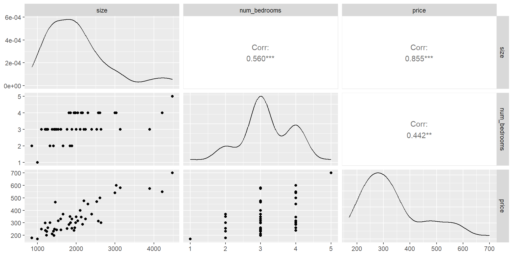

MAT-427: Multiple Linear Regression + Data Splitting
Computational Setup
Question!!!
As a model’s flexibility increases:
- its variance (increases/decreases)
- its bias (increases/decreases)
- its training MSE (increases/decreases)
- its test MSE (describe)
- its variance (increases)
- its bias (decreases)
- its training MSE (decreases)
- its test MSE (decreases at first, then increases and the model starts to overfit, U-shaped)
Bias-Variance Trade-Off App
When Dr. F tell you, navigate to this app
- Select your assigned data set and look at the second row of plots
- Which order polynomials have the lowest Bias, Variance, training MSE, and test MSE
- Which order polynomial would you say is best?
- Scroll down to the last row of plots and discuss how these images support your answers
- Repeat this process for different amounts of noise?
- Return to the first row of plots and select three different order polynomials based on your answers above… is the bias variance trade-off visible in this plot?
Modeling in R
Outlet Data
Suppose the CEO of a restaurant franchise is considering opening new outlets in different cities. They would like to expand their business to cities that give them higher profits with the assumption that highly populated cities will probably yield higher profits.
They have data on the population (in 100,000) and profit (in $1,000) at 97 cities where they currently have outlets.
R as an open-source language
- R is an open source language
- Advantages:
- Packages for almost anything you want
- “Cutting edge” methods rolled out quickly and early
- Disadvantages
- Many packages (especially new ones) may have bugs
- Lots of syntactical diversity
- Syntax is frequently dependent on the needs of the person who wrote the package and conventions at the time the package was created
- Advantages:
Enter tidyverse
The tidyverse is an opinionated collection of R packages designed for data science. All packages share an underlying design philosophy, grammar, and data structures.
tidyverseis for manipulating and visualizing data- the
tidyverseis a meta-package meaning it is a collection of a bunch of other packages
Enter tidymodels
The tidymodels framework is a collection of packages for modeling and machine learning using tidyverse principles.
tidymodelscreates a unified framework for building models in R- Eric’s opinion: similar idea to
scikit-learnin Python
Back to linear regression
Classic Linear Regression in R
This corresponds to the model:
\[ \begin{aligned} \text{Profit} &= -3.90 + 1.19\times\text{Population}\\ \hat{Y}_i &= -3.90 + 1.19X_i \end{aligned} \] i.e. \(\hat{\beta}_0 = -3.90\) and \(\hat{\beta}_1 = 1.19\)
Modeling with tidymodels
Specify mathematical structure of model (e.g. linear regression, logistic regression)
Specify the engine for fitting the model. (e.g.
lm,stan,glmnet).When required, declare the mode of the model (i.e. regression or classification).
Linear Regression with tidymodels
# Usually put these at the top
library(tidymodels) # load tidymodels package
tidymodels_prefer() # avoid common conflicts
lm_model <- linear_reg() |> # Step 1
set_engine("lm") # Step 2
# Step 3 not required since linear regression can't be used for classification
# Fit the model
lm_model_fit <- lm_model |>
fit(profit ~ population, data = outlets)Linear Regression with tidymodels
| term | estimate | std.error | statistic | p.value |
|---|---|---|---|---|
| (Intercept) | -3.895781 | 0.7194828 | -5.414696 | 5e-07 |
| population | 1.193034 | 0.0797439 | 14.960806 | 0e+00 |
Same model as before:
\[ \begin{aligned} \text{Profit} &= -3.90 + 1.19\times\text{Population}\\ \hat{Y}_i &= -3.90 + 1.19X_i \end{aligned} \]
Linear Regression in R: Prediction
new_cities <- tibble(population = rnorm(100, 7, 3))
lm_model_fit |>
predict(new_data = new_cities) |>
kable()| .pred |
|---|
| 3.1516725 |
| 2.1711684 |
| -6.0760699 |
| 5.3468146 |
| 1.8470768 |
| 0.8842374 |
| 1.2661841 |
| 2.3800563 |
| 8.8322652 |
| 2.1678223 |
| 3.9795578 |
| 2.3280284 |
| 11.3254345 |
| 1.6186056 |
| 5.2362302 |
| 0.8737243 |
| -1.1184131 |
| 1.5488673 |
| 2.8771860 |
| 3.8945697 |
| 16.3450392 |
| 4.9894386 |
| 1.8909563 |
| 5.2970217 |
| 11.5095750 |
| 0.0661788 |
| 12.7612003 |
| 1.8870375 |
| 8.2183571 |
| 3.1575999 |
| 2.0554480 |
| 1.2178679 |
| 7.7951011 |
| 3.9076452 |
| 4.2144324 |
| 12.3829600 |
| 3.0038749 |
| 2.4657828 |
| 11.4415654 |
| 5.7849277 |
| 12.2894594 |
| 3.7278807 |
| 7.0352033 |
| 1.8464096 |
| 0.8130212 |
| 3.1340073 |
| 2.5353752 |
| 6.2398132 |
| 1.8803603 |
| 0.8072596 |
| 2.8806219 |
| 9.4117370 |
| 10.4309074 |
| 5.1180954 |
| 4.4672868 |
| 1.8654243 |
| 5.6099707 |
| 4.4678752 |
| 7.3351427 |
| 0.5803775 |
| 6.6433521 |
| 2.4511320 |
| 1.0286620 |
| 6.9798660 |
| 3.5224190 |
| 2.2906833 |
| 1.6191880 |
| 0.4940967 |
| 5.3365153 |
| 7.9936234 |
| -0.3778866 |
| 13.1732384 |
| 3.9017224 |
| 2.0247437 |
| -0.2404101 |
| -3.4666744 |
| 5.0475641 |
| 7.8018090 |
| 0.9024262 |
| 8.5608965 |
| 6.9886856 |
| -1.4533916 |
| 5.7957400 |
| 2.3572005 |
| 3.4768438 |
| 6.7878777 |
| 1.5513093 |
| 5.6196692 |
| -2.2012039 |
| 10.0700469 |
| 4.9185464 |
| -0.8316598 |
| 4.6019756 |
| 0.0603189 |
| 2.8487076 |
| 1.4164397 |
| 2.7913354 |
| 7.2661678 |
| 3.0104673 |
| 8.1565044 |
Note: New data must be a data frame with the same columns names as the training data
Multiple Linear Regression
Multiple Linear Regression
- Response: \(Y\)
- Predictor Variables: \(X_1, X_2, \ldots, X_p\)
- Assume true relationship:
\[ \begin{aligned} Y&=f(\mathbf{X}) + \epsilon\\ &=\beta_0 + \beta_1 X_1 + \beta_2 X_2 + \ldots + \beta_p X_p + \epsilon \end{aligned} \] where \(\beta_j\) quantifies the association between the \(j^{th}\) predictor and the response.
Multiple Linear Regression: Estimating Parameters
- Suppose \(\hat{\beta}_0, \hat{\beta}_1, \ldots, \hat{\beta}_p\) are estimates of \(\beta_0, \beta_1, \ldots, \beta_p\)
- Training Data:
- Observed response: \(y_i\) for \(i=1,\ldots,n\)
- Observed predictors: \(x_{1i}, x_{2i}, \ldots x_{pi}\) for \(i=1,\ldots, n\)
- Predicted response: \[\hat{y}_i = \hat{\beta}_0 + \hat{\beta}_1x_{1i} + \ldots + \hat{\beta}_px_{pi} \text{ for } i=1, \ldots, n\]
- Residuals: \(e_i = \hat{y}_i - y_i\) for \(i=1, \ldots, n\)
- Mean Squared Error (MSE): \(MSE =\dfrac{e^2_1+e^2_2+\ldots+e^2_n}{n}\)
Multiple Linear Regression: Estimating Parameters
- Goal: Use training data to find \(\hat{\beta}_0, \hat{\beta}_1, \ldots, \hat{\beta}_p\) that minimizes MSE
- \(\hat{\beta}_i\)’s called least-squares estimators
- Since minimizing MSE \(\implies\) MSE is called cost/loss function
- Can use calculus or gradient descent to find \(\hat{\beta}_i\)’s
House Prices dataset
sizeis in square feetnum_bedroomsis a countpriceis in $1,000’s
Multiple Linear Regression
Some Exploratory Data Analysis (EDA)
Multiple Linear Regression in R
mlr_model <- linear_reg() |>
set_engine("lm")
house_price_mlr <- mlr_model |>
fit(price ~ size + num_bedrooms, data = house_prices) # fit the model
house_price_mlr |>
tidy() |> # produce result summaries of the model
kable()| term | estimate | std.error | statistic | p.value |
|---|---|---|---|---|
| (Intercept) | 89.5977660 | 41.7674230 | 2.1451591 | 0.0374991 |
| size | 0.1392106 | 0.0147951 | 9.4092391 | 0.0000000 |
| num_bedrooms | -8.7379154 | 15.4506975 | -0.5655353 | 0.5745825 |
Multiple Linear Regression: Interpreting Parameters
- \(\hat{\beta}_0=89.5978\): The intercept \(\implies\) a house with 0 square feet and 0 bedrooms would cost approximately $89,598.80. Is this meaningful in context? Not really
- \(\hat{\beta}_1=0.1392\): With
num_bedroomsremaining fixed, an additional 1 square foot ofsizeleads to an increase inpriceby approximately $139.20. - \(\hat{\beta}_2=-8.7379\): With
sizeremaining fixed, an additional bedroom leads to an decrease inpriceof approximately $8,737.90.
- Hmm…. that’s a little weird…
- Simpson’s Paradox: when relationship between two variables disappears or reverses when controlling for a third, confounding variable
Multiple Linear Regression: Interpreting Parameters
- Write down our model in mathematical notation
- \(\text{price} = 89.5978 + 0.1392\times\text{size} - 8.7379\times\text{num_bedrooms}\)
- \(Y = 89.5978 + 0.1392X_1 - 8.7379X_2\)
Multiple Linear Regression: Prediction
- Prediction of
pricewhensizeis 2000 square feet for a house with 3 bedrooms - \(\text{sales} = 89.5978 + 0.1392\times2000 - 8.7379\times3 = 341.7841\)
Linear Regression: Comparing Models
- Many methods for comparing regression models from your regression course
- Today: Data splitting
- First: New Data
- ames housing data
- Many variables
- Focus on:
Sale_Price: in dollarsGr_Liv_Area: size in square feetBedroom_AbvGr: number of bedrooms above grade
Comparing Models: Data Splitting
- Split
amesdata set into two parts- Training set: randomly selected proportion \(p\) (typically 50-90%) of data used for fitting model
- Test set: randomly selected proportion \(1-p\) of data used for estimating prediction error
- If comparing A LOT of models, split into three parts to prevent information leakage
- Training set: randomly selected proportion \(p\) (typically 50-90%) of data used for fitting model
- Validation set: randomly selected proportion \(q\) (typically 20-30%) of data used to choosing tuning parameters
- Test set: randomly selected proportion \(1-p-q\) of data used for estimating prediction error
- Idea: use data your model hasn’t seen to get more accurate estimate of error and prevent overfitting
Comparing Models: Data Splitting with tidymodels
set.seed(427) # Why?
ames_split <- initial_split(ames, prop = 0.70, strata = Sale_Price) # initialize 70/30
ames_split<Training/Testing/Total>
<2049/881/2930>stratanot necessary but good practicestratawill use stratified sampling on the variable you specify (very little downside)
Linear Regression: Comparing Models
- Let’s create three models with
Sale_Priceas the response:- fit1: a linear regression model with
Bedroom_AbvGras the only predictor - fit2: a linear regression model with
Gr_Liv_Areaas the only predictor - fit3 (similar to model in previous slides): a multiple regression model with
Gr_Liv_AreaandBedroom_AbvGras predictors - fit4: super flexible model which fits a 10th degree polynomial to
Gr_Liv_Areaand a 2nd degree polynomial toBedroom_AbvGr
- fit1: a linear regression model with
fit1 <- mlr_model |> fit(Sale_Price ~ Bedroom_AbvGr, data = ames_train) # Use only training set
fit2 <- mlr_model |> fit(Sale_Price ~ Gr_Liv_Area, data = ames_train)
fit3 <- mlr_model |> fit(Sale_Price ~ Gr_Liv_Area + Bedroom_AbvGr, data = ames_train)
fit4 <- mlr_model |> fit(Sale_Price ~ poly(Gr_Liv_Area, degree = 10) + poly(Bedroom_AbvGr, degree = 2), data = ames_train)Computing MSE
# Fit 1
fit1_train_mse <- mean((ames_train$Sale_Price - predict(fit1, new_data = ames_train)$.pred)^2)
fit1_test_mse <- mean((ames_test$Sale_Price - predict(fit1, new_data = ames_test)$.pred)^2)
# Fit 2
fit2_train_mse <- mean((ames_train$Sale_Price - predict(fit2, new_data = ames_train)$.pred)^2)
fit2_test_mse <- mean((ames_test$Sale_Price - predict(fit2, new_data = ames_test)$.pred)^2)
# Fit
fit3_train_mse <- mean((ames_train$Sale_Price - predict(fit3, , new_data = ames_train)$.pred)^2)
fit3_test_mse <- mean((ames_test$Sale_Price - predict(fit3, new_data = ames_test)$.pred)^2)
# Fit
fit4_train_mse <- mean((ames_train$Sale_Price - predict(fit4, , new_data = ames_train)$.pred)^2)
fit4_test_mse <- mean((ames_test$Sale_Price - predict(fit4, new_data = ames_test)$.pred)^2)Question
Without looking at the numbers
- Do we know which of the following is the smallest:
fit1_train_mse,fit2_train_mse,fit3_train_mse,fit4_train_mse? Yes,fit4_train_mse - Do we know which of the following is the smallest:
fit1_test_mse,fit2_test_mse,fit3_test_mse,fit4_test_mse? No
Choosing a Model
[1] 6213135279 3188099910 2781293767 2472424544[1] 4[1] 6.329031e+09 3.203895e+09 2.732389e+09 2.726084e+12[1] 3fit4has the lowest training MSE (to be expected)fit3has the lowest test MSE- We would choose
fit3
- We would choose
- Anything else interesting we see?